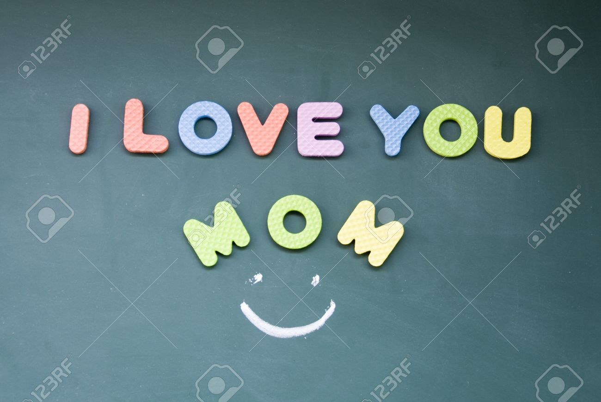
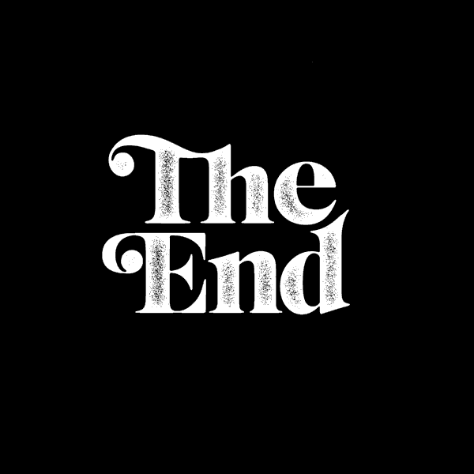

Мама поздровляю с 8-го марата !

My best mother!
Ты всегда радовала когда мне было грустно.Ты была рядом когда я подал.Ты всегда доверяла мне.
Ты всегда хотела моего блага.Всегда дорила мне радость.Я делаю всё вазможное чтобы ты была рада.Этот день твой мам.Но не только твой а ещё день всех мам.Мне просто нечего сказать.Почему ? Потому что я не нохожу слов описать любовь камне.И знай я тоже тебя очень сильно люблю.Не только из-за того что ты для меня всё делаешь а потому что ты меня любишь и знаете что в семье главное не денги а любовь и я готов поспорить со всеми что любовь главное и не только в семье а в жизне тоже.Незнаю что сказать но скажу не хочу сказать живи потому что : Когда живёшь вечно жизнь теряет смысал а когда живёшь в оприделянная время вот тогда жизнь имеет смысла.Мне больше нечего сказать только скажу 2 строшки :1)Поздровляю с 8-го марата и желаю чтобы этот день прошёл отлично.2)Чтобы жила долго и счястливо !.
<
